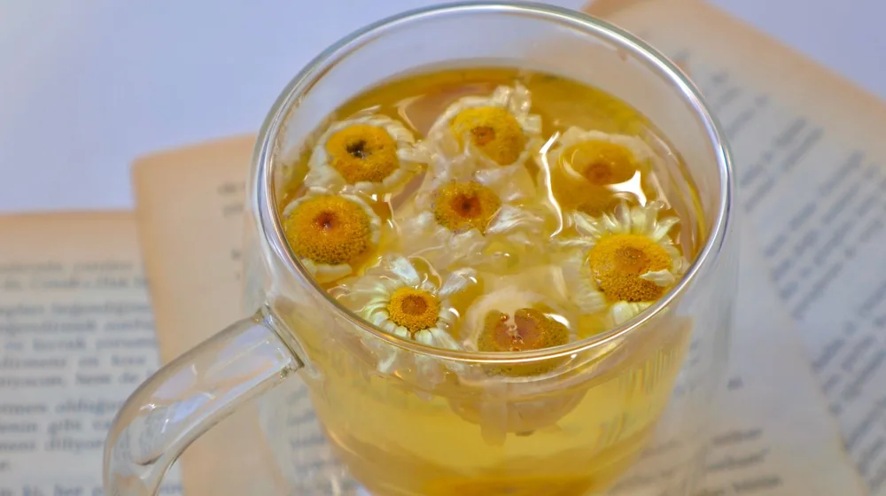

내 몸에 딱 맞는 한방차 찾는 법: 체질별 한방차 완벽 가이드
사진: azra melek / Pexels (무료 이미지, 출처 표기)
내 체질, 무엇인지부터 알아볼까요? (사상체질 간단 정리)

어떤 한방차가 나에게 좋을지 고민이 많으실 겁니다. 한방차를 고르기 전에 가장 먼저 알아야 할 것은 바로 자신의 체질입니다. 한의학에서는 크게 네 가지 사상체질(四象體質)로 사람을 분류합니다. 이는 타고난 신체적, 정신적 특성을 바탕으로 하는데, 각 체질에 따라 몸의 균형을 맞추는 데 필요한 차가 달라집니다.
사상체질은 태양인(太陽人), 소양인(少陽人), 태음인(太陰人), 소음인(少陰人)으로 나뉩니다. 2026년 11월 기준, 자신의 정확한 체질은 한의원 진료를 통해 알 수 있지만, 일반적으로 알려진 각 체질의 특징을 통해 대략적으로 짐작해 볼 수는 있습니다.
- 태양인: 상체가 발달하고 하체가 약하며, 폐 기능이 좋고 간 기능이 약합니다. 진취적이고 추진력이 강하나 화를 잘 냅니다.
- 소양인: 가슴이 발달하고 하체가 약하며, 비위 기능이 좋고 신장 기능이 약합니다. 성격이 급하고 열정적이며, 더위를 많이 탑니다.
- 태음인: 허리가 발달하고 폐 기능이 약하며, 간 기능이 좋고 위장이 튼튼합니다. 느긋하고 침착하지만 땀이 많고 비만해지기 쉽습니다.
- 소음인: 하체가 발달하고 상체가 약하며, 소화기(비위) 기능이 약합니다. 꼼꼼하고 내성적이며, 손발이 차고 추위를 많이 탑니다.
사상체질별 맞춤 한방차 체크리스트
이제 각 체질별로 어떤 한방차가 권장되는지 자세히 살펴보겠습니다. 이 정보는 일반적인 한의학적 견해를 바탕으로 하며, 특정 질환이 있다면 반드시 전문가와 상담 후 섭취해야 합니다.
한방차, 이렇게 마시면 더 좋아요: 올바른 섭취법과 주의사항
아무리 좋은 한방차라도 올바르게 섭취하지 않으면 효과를 보기 어렵습니다. 한방차는 약이 아니므로 단기간에 드라마틱한 효과를 기대하기보다는 꾸준히 마시는 것이 중요합니다. 끓이는 방법에 따라 성분 추출량이 달라질 수 있으니, 각 차의 특성에 맞춰 적절한 시간 동안 끓이거나 우려내는 것이 좋습니다.
일반적으로 말린 약재는 깨끗이 씻어 물에 넣고 약불에서 20~30분 정도 달인 후 마십니다. 곡물류 차는 보통 볶아서 끓이며, 잎차는 뜨거운 물에 짧게 우려내는 방식이 적합합니다. 처음에는 소량부터 시작하여 몸의 반응을 살피고, 이상 반응이 나타나면 즉시 중단해야 합니다.
체질에 맞지 않는 한방차, 오히려 독이 될 수 있습니다
내 체질에 맞지 않는 한방차를 섭취할 경우, 오히려 몸의 균형이 깨져 불쾌한 증상을 겪을 수 있습니다. 예를 들어, 몸에 열이 많은 소양인이 인삼차처럼 따뜻한 성질의 차를 계속 마시면 두통, 불면, 피부 트러블 등이 심해질 수 있습니다.
반대로 몸이 차고 소화기가 약한 소음인이 메밀차나 보리차처럼 찬 성질의 차를 마시면 설사, 복통, 소화 불량이 악화될 수 있습니다. 이러한 부작용을 피하기 위해서는 자신의 체질을 정확히 알고, 그에 맞는 차를 선택하는 것이 무엇보다 중요합니다. 단순히 '몸에 좋다'는 말만 듣고 무분별하게 섭취하는 것은 피해야 합니다.
자주 묻는 질문 (FAQ): 한방차, 전문가 도움이 필요할까요?
Q1: 체질이 헷갈리는데, 어떤 차를 마셔야 할까요?
A1: 자신의 체질을 정확히 알기 어렵다면, 특정 효능이 강한 차보다는 보리차, 옥수수차 등 성질이 순한 차를 마시는 것이 안전합니다. 열이 많은지, 몸이 찬지 정도의 큰 특징만 파악하고 그에 맞춰 마시는 것도 한 방법입니다. 가장 정확한 진단은 한의사와 상담하는 것입니다.
Q2: 한방차를 매일 마셔도 괜찮을까요?
A2: 대부분의 한방차는 식품으로 분류되어 매일 마셔도 크게 문제 되지 않습니다. 하지만 특정 약재 성분이 포함된 차는 개인의 건강 상태나 복용 중인 약에 따라 부작용이 발생할 수 있습니다. 특히 임신 중이거나 기저질환이 있는 경우, 반드시 전문가와 상담 후 결정해야 합니다.
Q3: 시판 한방차와 직접 끓인 차의 차이가 있나요?
A3: 시판 한방차는 편리하고 일정한 품질을 유지한다는 장점이 있습니다. 직접 끓이는 차는 약재의 신선도나 끓이는 방법에 따라 성분 추출량이 달라질 수 있지만, 개인의 기호나 체질에 맞춰 농도를 조절할 수 있습니다. 중요한 것은 제품의 성분표를 확인하고 첨가물이 적은 것을 고르는 것입니다.
자신의 체질을 이해하고 그에 맞는 한방차를 꾸준히 마시는 것은 건강한 삶을 위한 좋은 습관이 될 수 있습니다. 2026년 11월 기준으로 알려드린 정보가 여러분의 현명한 선택에 도움이 되기를 바랍니다. 더욱 정확한 진단과 상담을 원하시면 가까운 한의원을 방문하시길 권장합니다.
🔗 이 글도 함께 보면 좋아요: 내 몸이 원하는 한방 스파: 태양인부터 소음인까지 완벽 가이드
관련 추천 상품
이 포스팅은 쿠팡 파트너스 활동의 일환으로, 이에 따른 일정액의 수수료를 제공받습니다.